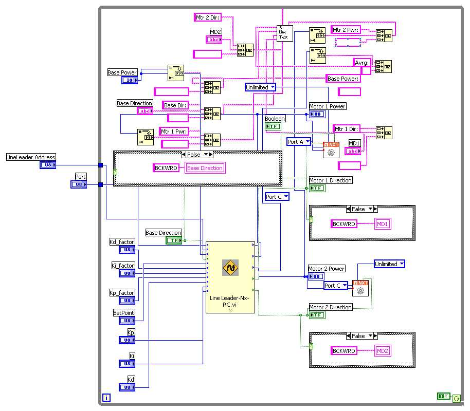

Inputs
Line Leader Adress- This is where you select the adress of your NXTLineLeader the factory default is 2.
Base Direction - You can leave this unchanged for default value (Forward).
Base Power - You can leave this unchanged for default value.
Setpoint - the position of line to maintain.
Kp - the numerator value for the Kp
Kp_factor - the divisor factor for the Kp
Ki - the numerator value for the Ki
Ki_factor - the divisor factor for the Ki
Kd - the numerator value for the Kd
Kd_factor - the divisor factor for the Kd
Outputs
Motor 1 Power - For simple operation wire this to your left motor's power plug.
Motor 2 Direction - For simple operation wire this to your right motor's direction plug.
Motor 2 Power - For simple operation wire this to your right motor's power plug.
Sensor Average- The average of all 8 sensors values.
Sample Program
Sample located at
..\mindsesnors.com
LVHS\mindsensors.com Sample
Programs\NXTLineLeader-SP\NXTLineLeader-Remote